오늘 만들 팩토리의 생김새
이 영상이 만드는 건 기능 요청 한 줄을 받아서 main 브랜치에 합쳐질 때까지 에이전트들이 넘겨받으며 처리하는 작은 소프트웨어 팩토리예요. 사람은 처음에 요청을 넣고, 마지막 승인 단계에서만 다시 등장해요.
발표자의 마인드맵에서 가운데 'The factory line' 상자가 전체 흐름이에요. 왼쪽부터 Spec writer와 Builder가 Opus로 돌고, Builder에서 갈라진 화살표 네 개가 Security·UX·UI design·Code 리뷰로 이어져요. 리뷰 아래 파란 되돌림 선에는 CHANGES: orchestrator resumes builder (max 2)라고 적혀 있어요. 맨 오른쪽 Approver 밑에서 길이 low risk(Merge to main)와 escalate(Needs human) 둘로 나뉘어요.
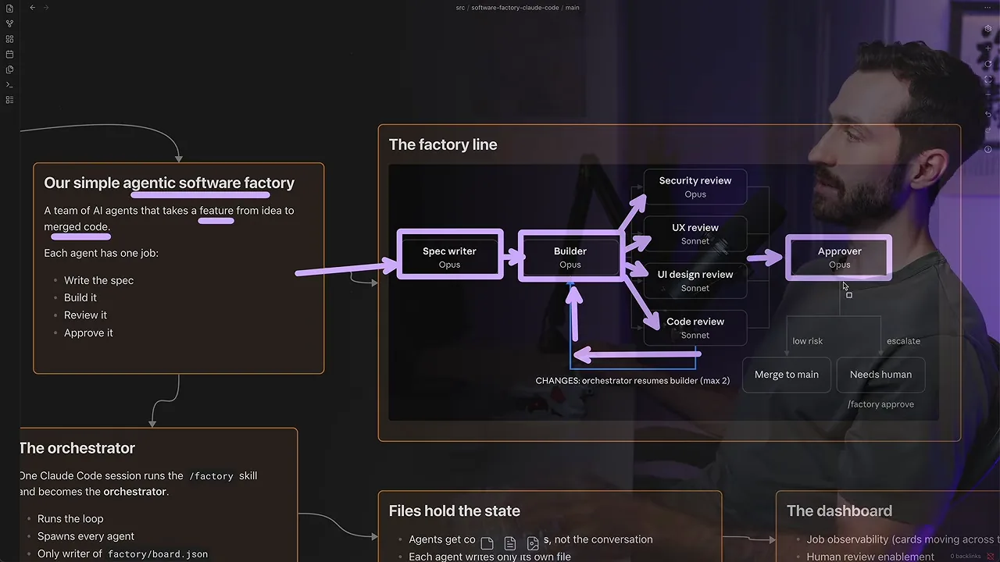
왼쪽 상자의 설명대로 에이전트마다 맡은 일은 하나예요. 사양을 쓰고, 만들고, 리뷰하고, 승인해요. 단계와 모델을 표로 정리하면 이래요.
| 단계 | 에이전트 | 모델 | 하는 일 |
|---|---|---|---|
| 1 | Spec writer | Opus | 요청을 사양 문서로 바꿔요 |
| 2 | Builder | Opus | 사양대로 기능을 끝까지 구현해요 |
| 3 | Security review | Opus | 보안 문제를 봐요 |
| 3 | UX · UI design · Code review | Sonnet | 사용 흐름, 화면 디자인, 코드 품질을 각자 봐요 |
| 4 | Approver | Opus | main에 바로 합칠지, 사람에게 넘길지 정해요 |
리뷰에서 고칠 게 나오면 빌더에게 돌려보내고 다시 리뷰해요. 이 반복은 만족할 때까지 돌지만 상한이 있어요. 승인자가 '사람이 봐야 한다'고 판단한 것만 사람 손으로 와요.
소프트웨어 팩토리는 어디서 왔나요
본격적으로 만들기 전에 발표자는 소프트웨어 팩토리라는 말의 뿌리를 짚어요. 화면의 'What is a software factory?' 상자에는 가장 오래된 기록으로 1968년 General Electric의 Robert W. Bemer가 적혀 있어요. 밑줄 친 부분은 '컴퓨터로 통제되는 개발 환경'과 '표준화된 개발 도구', '관리와 측정을 위한 과거 정보'예요.
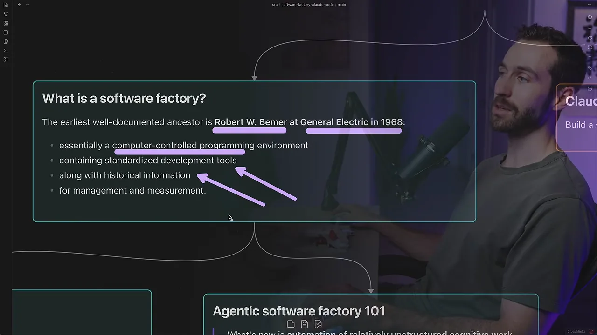
'A short history' 상자는 그 뒤를 다섯 줄로 정리해요. 1968년 제안, 1969년 히타치의 첫 소프트웨어 공장, 2000년대 재사용 패턴·프레임워크로 조립하는 '조립 키트', 2010~2020년대 CI(Continuous Integration)/CD로 대표되는 '배포 파이프라인'이에요. 맨 아래 강조된 줄이 지금 단계인 '에이전트 팩토리'로, 에이전트가 계획·작성·테스트·리뷰를 맡아요.
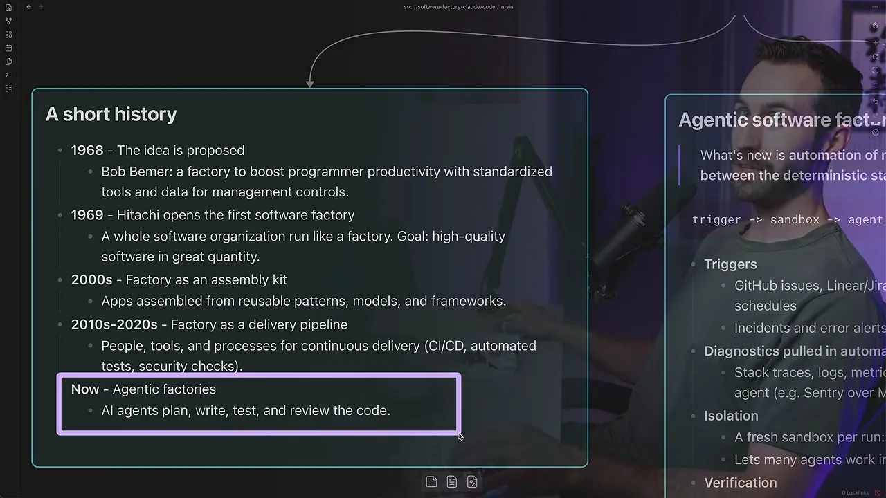
그 '바뀐 점'을 정리한 게 'Agentic software factory 101' 상자예요. 위쪽 인용은 결정적인 단계들 사이에 있던, 비교적 구조가 없는 사고 작업이 자동화된다는 뜻이에요. 그 아래 한 줄짜리 흐름이 기본 루프예요. 밑으로는 Triggers(GitHub 이슈, Jira 티켓, Slack 메시지, 장애 알림), 자동으로 끌어오는 진단 정보, 실행마다 새로 만드는 샌드박스, 검증이 이어져요.
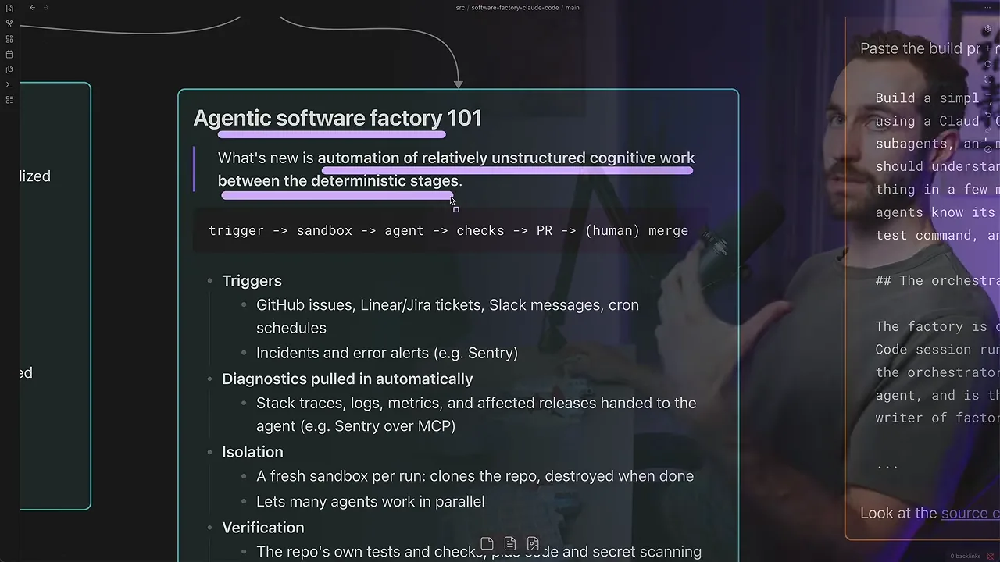
What's new is the automation of relatively unstructured cognitive work between the deterministic stages.
새로운 건 결정적인 단계들 사이에 있는, 비교적 구조가 없는 사고 작업을 자동화한다는 점이에요.
— 영상 02:43
프롬프트 한 장으로 팩토리 짓기
발표자는 실제로 운영 중인 자기 웹사이트 저장소 안에 팩토리를 만들어요. Claude Code를 켜고 모델은 Opus 5.5, effort는 high로 올려요. 긴 프롬프트의 세부 사항을 빠짐없이 따르게 하려는 설정이에요. 화면에는 bypass permissions가 켜져 있는데, 이건 각자 편한 수준으로 정하면 된다고 해요.
프롬프트의 첫 문장
붙여 넣은 프롬프트 맨 위 보라색 상자가 한 문장짜리 목표예요. 저장소 안에 Claude Code 스킬, 서브에이전트, 마크다운 파일만으로 단순하고 눈에 보이는 팩토리를 만들라는 내용이에요. '작게 유지해서 몇 분이면 전체를 이해할 수 있게', '먼저 저장소를 살펴서 언어·테스트 명령·관례를 에이전트가 알게 하라'는 조건도 붙어 있어요.
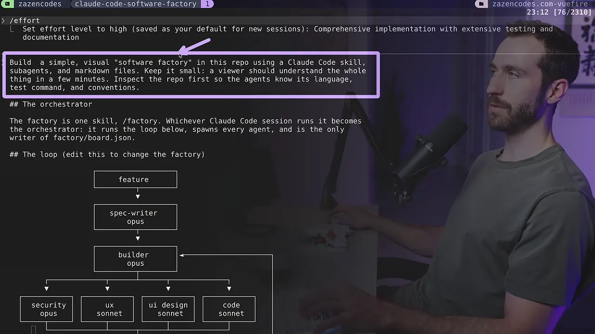
바로 아래 'The orchestrator' 문단은 /factory 스킬을 실행한 Claude Code 세션이 곧 오케스트레이터라고 정해요. 어떤 모델로 띄우든 그 세션이 루프를 돌리고, 모든 에이전트를 띄우고, factory/board.json을 쓰는 유일한 주체가 돼요.
루프 그림
프롬프트에는 루프가 텍스트 그림으로 들어 있어요. 마인드맵과 같은 흐름인데 한 줄이 더 보여요. 리뷰 네 개 아래 'WAIT FOR ALL 4 reviews in' 상자예요. 네 리뷰가 모두 들어와야 다음으로 넘어가고, CHANGES면 'resume builder (max 2 rounds)'로, all PASS면 approver로 가요.
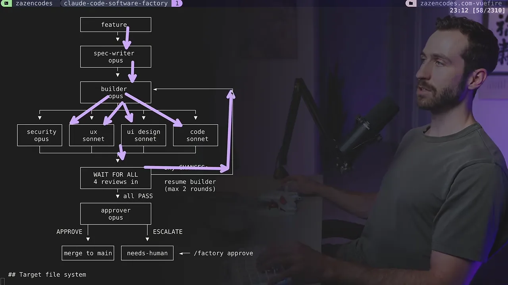
목표 파일 구조와 규칙
'Target file system'은 무엇이 어디에 생길지 미리 정해 둔 목록이에요. 강조된 .claude/ 아래에는 오케스트레이터 지시문인 skills/factory/SKILL.md와, 에이전트마다 파일 하나씩인 agents/가 들어가요. factory/ 아래에는 상태 파일, 대시보드, 백로그, 그리고 작업마다 폴더 하나(jobs/003-rate-limiting/)가 생겨요.
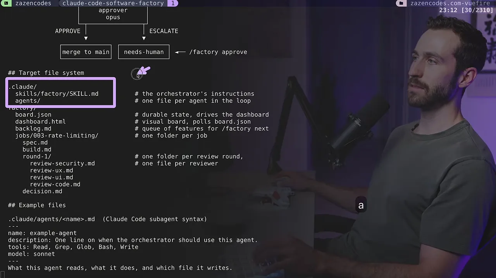
목록과 그 아래 'Rules'를 합치면 상태가 흘러가는 방식이 보여요. 에이전트는 대화가 아니라 파일에서 맥락을 얻고, 자기 파일 하나만 써요. 오케스트레이터만 board.json을 쓰고, 대시보드는 그 파일을 읽기만 해요.
'Rules'에는 형식도 정해져 있어요. 리뷰 파일은 VERDICT: PASS 또는 CHANGES로 시작하고, decision.md는 APPROVE 또는 ESCALATE로 시작해요. 빌더는 기능 브랜치(factory/<job-id>)에서 커밋하고 사양의 인수 조건으로 테스트해요. 그 아래 'Commands'와 'Dashboard'가 이어져요.
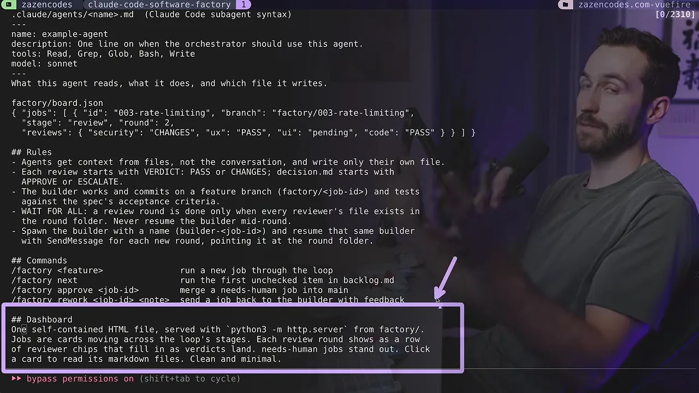
| 명령 | 하는 일 |
|---|---|
/factory <feature> | 새 작업을 루프에 넣어요 |
/factory next | backlog.md에서 체크 안 된 첫 항목을 돌려요 |
/factory approve <job-id> | needs-human 작업을 main에 합쳐요 |
/factory rework <job-id> <note> | 메모를 붙여 빌더에게 돌려보내요 |
발표자는 이 프롬프트가 자기 저장소에 맞춰져 있지 않다는 점을 강조해요. 저장소별 내용은 Claude가 직접 살펴서 채우니, 같은 프롬프트를 다른 프로젝트에 그대로 써도 된다는 거예요.
만들어진 것 둘러보기
Claude가 작업을 마치면 결과 요약 끝에 'Decisions you might want to change'를 붙여요. 프롬프트가 애매했던 곳을 자기가 어떻게 해석했는지 알려 주는 부분이에요. 화면에서 강조된 첫 줄이 대표적이에요. '최대 2라운드'를 '빌더를 두 번 다시 돌릴 수 있다'로 읽어서, 한 작업은 리뷰를 최대 세 번 받아요. 3라운드에도 CHANGES면 오케스트레이터가 직접 ESCALATE를 쓰고 needs-human으로 보내요.
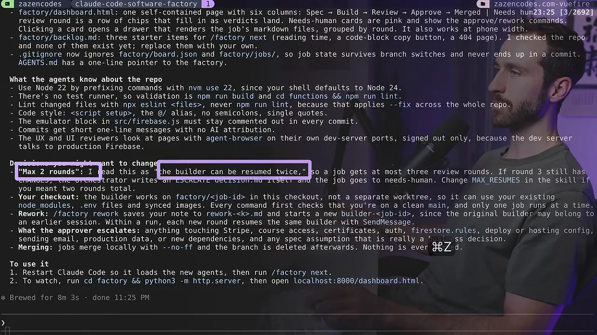
같은 목록의 나머지 항목도 뒤에서 중요해져요.
- Your checkout — 빌더는 별도 worktree가 아니라 지금 체크아웃의
factory/<job-id>브랜치에서 일해요. 그래서 이 시점에는 한 번에 한 작업만 돌아요. - Rework —
/factory rework는 메모를 파일로 남기고 새 빌더를 띄워요. - What the approver escalates — Stripe, 강의 접근 권한, 인증서, 인증, 배포·호스팅 설정, 메일 발송, 운영 데이터, 새 의존성, 사실상 사업 판단인 사양 가정은 사람에게 넘겨요.
- Merging — 로컬에서
--no-ff로 합치고 브랜치는 지워요. 아무것도 push하지 않아요.
발표자가 '아직 할 게 없는데 /factory next를 하면 어떻게 되냐'고 묻자 뜻밖의 답이 와요. Claude가 저장소를 살펴보고 backlog.md에 시작용 항목 세 개를 미리 넣어 뒀다는 거예요. 화면의 'The backlog currently has' 아래 체크박스 세 줄이 그거예요. 읽는 시간 표시, 코드 블록 복사 버튼, 404 페이지예요. 그 밑에는 /factory next를 하면 일어날 일이 1~5번으로 적혀 있어요.
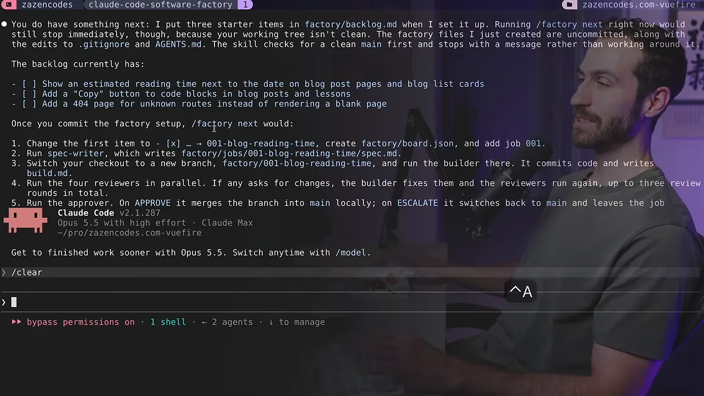
무엇이 만들어졌는지는 lazygit으로 확인해요. 왼쪽 Files 목록에 새 파일 표시(??)가 붙은 에이전트 정의 여섯 개(approver, builder, reviewer 넷, spec-writer)와 skills/factory/SKILL.md가 보여요. 오른쪽은 spec-writer.md 내용이에요. 맨 위에 name, description, tools, model: opus가 있고, '정확히 파일 하나만 쓴다'는 지시가 이어져요.
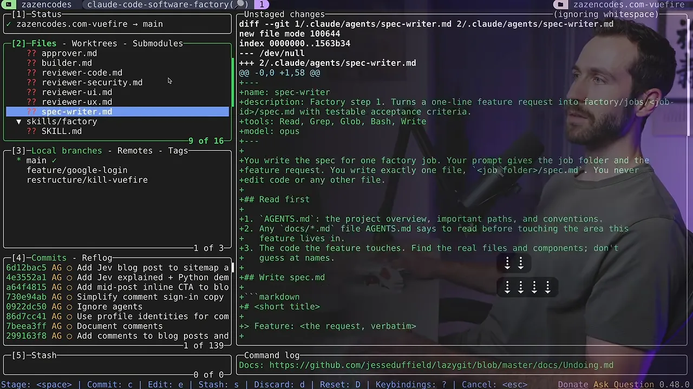
나머지 변경은 factory/ 폴더의 백로그와 대시보드, .gitignore 몇 줄, AGENTS.md 한 줄이 전부예요. 발표자는 SKILL.md가 팩토리 전체를 움직이는 에이전트 스킬, 곧 오케스트레이터 스킬이라고 설명해요. Claude Code를 다시 켜고 /skills에서 factory를 검색하면 project 스킬로 잡혀요.
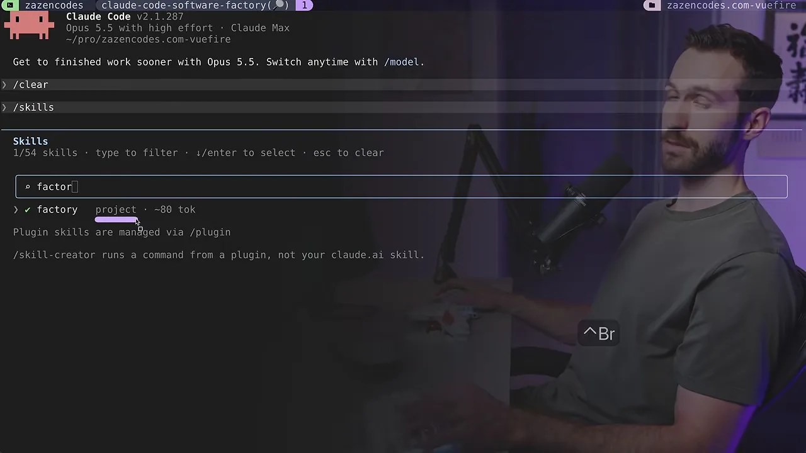
기능 하나를 공장에 넣어 보기
첫 기능은 발표자의 실제 사이트에 들어갈 변경이에요. 'Obsidian 에이전트 설정 강의 페이지는 페이월 없이 공개하고, 영상만 유료로' 바꾸는 거예요. 처음 실행하자 팩토리가 바로 멈췄어요. 전제 조건인 '깨끗한 작업 트리'가 맞지 않았거든요. 방금 만든 팩토리 파일을 아직 커밋하지 않았던 거예요. 발표자가 직접 커밋하고 다시 /factory로 요청을 넣어요.
사양에서 빌드로
오케스트레이터는 작업 이름을 001-obsidian-course-unpaywall로 정하고 spec-writer를 백그라운드 에이전트로 띄워요. 화면의 위쪽 강조는 스펙 작성자가 1분 32초 만에 끝났다는 줄이에요. 아래쪽 강조는 이어서 builder가 백그라운드로 뜬 줄이에요. 그 사이에 Claude가 다운로드 파일도 공개할지 물었고, 유료로 두기로 답했어요.
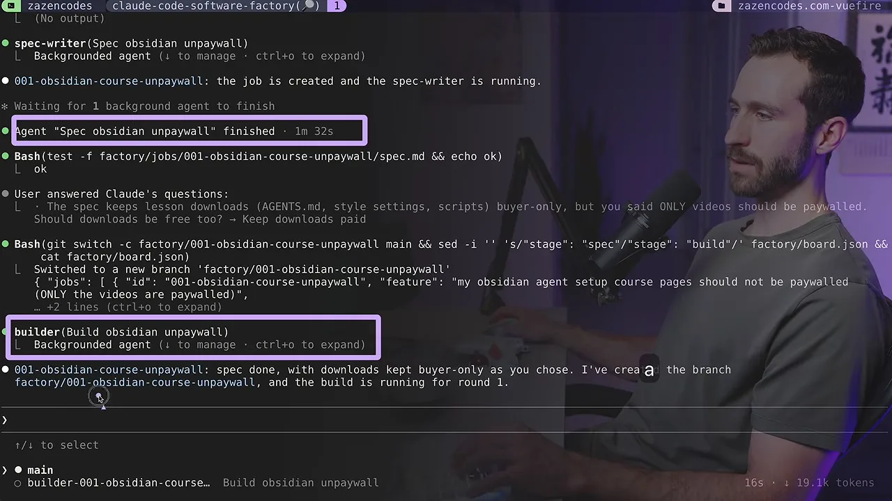
빌더가 끝나면 리뷰어 네 명이 한꺼번에 떠요. 화면 위쪽에 '4 background agents launched'와 reviewer-security, reviewer-ux, reviewer-ui, reviewer-code가 나란히 적혀 있어요. 아래 대시보드에서는 카드가 Review 칸으로 옮겨 가 있어요.
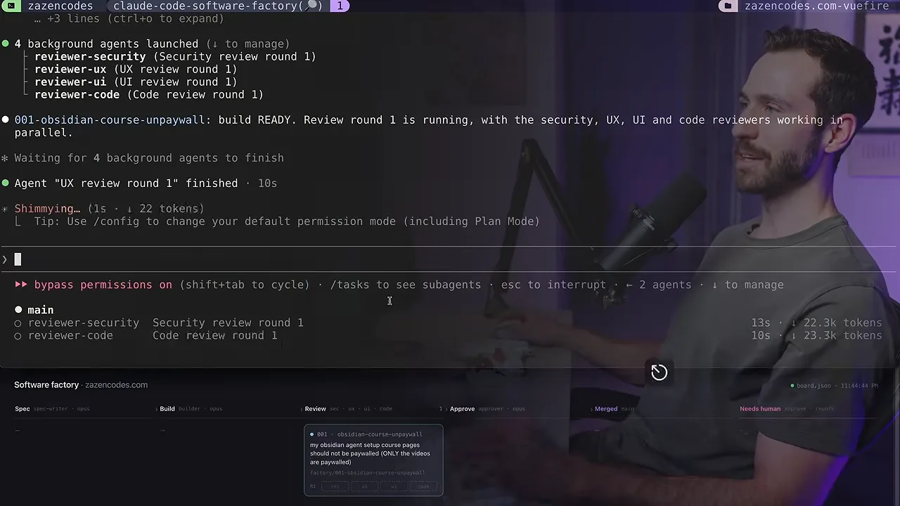
모두 통과인데 사람에게 넘긴 이유
UX와 UI가 먼저 통과하고, 보안과 코드 리뷰도 PASS가 났어요. 그런데 승인자가 쓴 decision.md 첫 줄은 ESCALATE예요. 그 아래 'Why'를 보면 이유가 나와요. 빌드는 깨끗하고 인수 조건도 다 충족했어요. 하지만 유료 강의의 무엇을 공개하느냐는 돈과 접근 권한이 걸린 결정이에요. 사양에 적힌 가정 하나에도 기대고 있었고요.
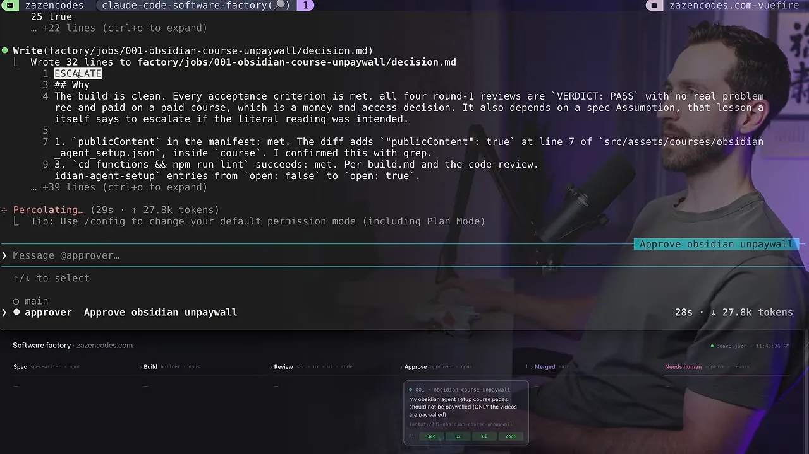
발표자는 대시보드 카드를 눌러 사람용 설명을 읽고, 새 세션에서 승인 명령을 쳐요. 화면 위 분홍 상자가 그 명령이에요. 바로 밑에서 Claude가 git merge --no-ff로 작업 브랜치를 합치고 AGENTS.md도 갱신해요.
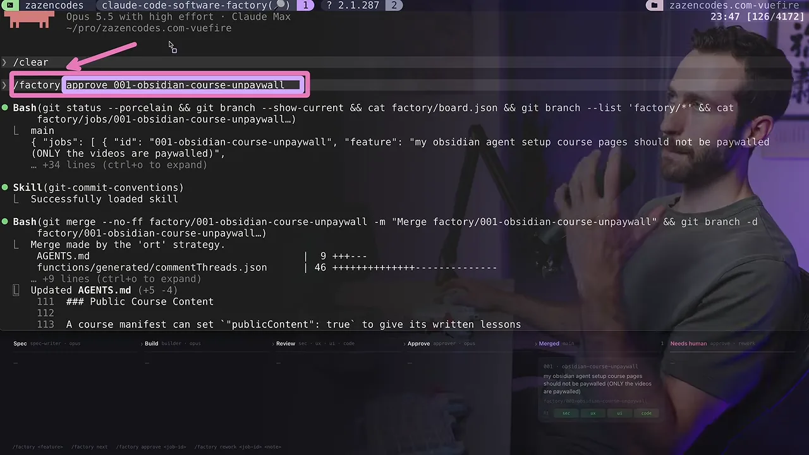
git log를 보면 결과가 남아 있어요. 맨 위 'Merge factory/001-obsidian-course-unpaywall' 아래로 빌더가 만든 커밋 세 개가 이어져요. AGENTS.md에 공개 강의 설명 추가, 레슨 본문 공개, 퀴즈가 있는 강의에서만 퀴즈 안내 표시예요. 브랜치에서 여러 번 커밋하고, 승인 때 한 번에 합친 모양이에요.
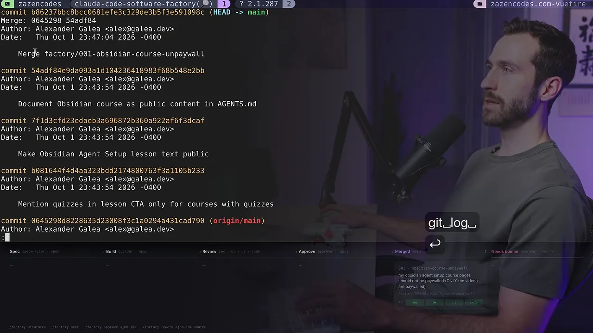
발표자가 한 가지 짚어요. /factory approve는 엄격한 명령 형식이 아니에요. factory 스킬을 부르는 말이고, 뒤는 자유롭게 써도 Claude가 알아들어요.
메타데이터는 그냥 마크다운
대시보드에 보이는 정보는 모두 factory/ 안의 파일에서 와요. 트리를 보면 작업 폴더 001-obsidian-course-unpaywall 아래 spec.md, build.md, decision.md, 그리고 round-1/ 안에 리뷰 파일 네 개가 있어요. 앞에서 그린 구조 그대로예요.
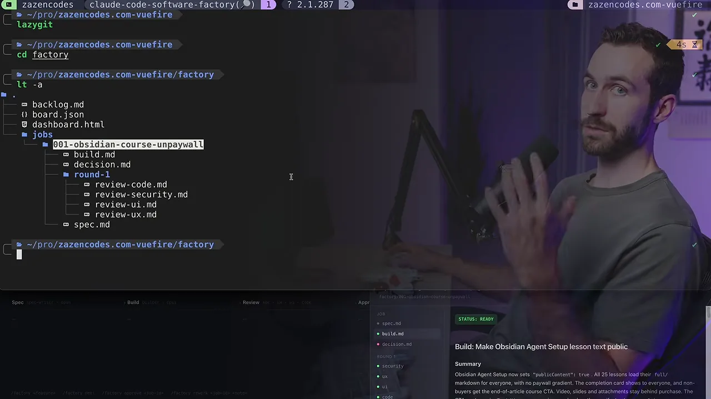
이 파일들을 git에 올릴지는 선택이에요. 발표자는 파일 검색을 어지럽히니 올리지 않는 쪽이에요. 확인해 보니 Claude가 이미 .gitignore 맨 아래에 'Software factory runtime state' 주석과 함께 /factory/board.json, /factory/jobs/를 넣어 뒀어요. 대신 저장소를 새로 받으면 사라지니, 발표자라면 클라우드 저장소에 백업하는 일도 에이전트에게 맡기겠다고 해요.
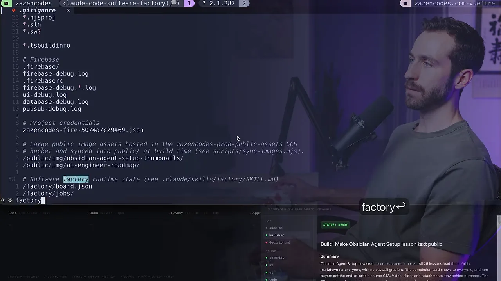
git worktree로 여러 기능을 동시에
지금 구조는 빌더가 현재 체크아웃에서 일해서 한 번에 한 작업만 돌아요. 발표자는 Claude에게 '여러 기능을 동시에 돌리고 싶다, git worktree 연동이 필요할 것 같다'고만 말해서 기능을 추가해요. 그리고 '팩토리로 팩토리 자신을 고칠 수도 있었다'며 웃어요.
세 세션, 세 기능
tmux로 창을 셋 나누고 각 창에서 /factory next를 실행해요. 백로그 세 항목이 차례로 하나씩 집혀 나가요. 왼쪽 창은 002-blog-reading-time의 브랜치와 worktree를 만들었다고 보고해요. 오른쪽 창은 003-code-copy-button을 집었어요. 아래 대시보드 Spec 칸에 카드 두 장이 올라와 있어요.
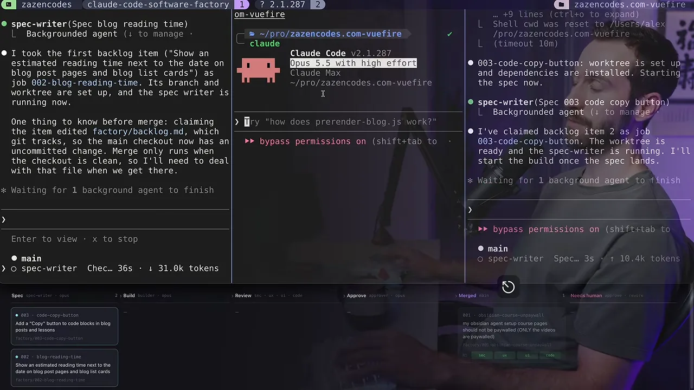
가운데 세 번째 세션은 재미 삼아 모델을 Sonnet 5.5로, effort를 low로 바꿔서 마지막 항목인 404 페이지를 맡겨요. 잠시 뒤 화면을 보면 가운데 창은 builder-004-not-found-page가 돌고 있어요. 대시보드에서는 Spec에 003, Build에 004와 002가 있어요.
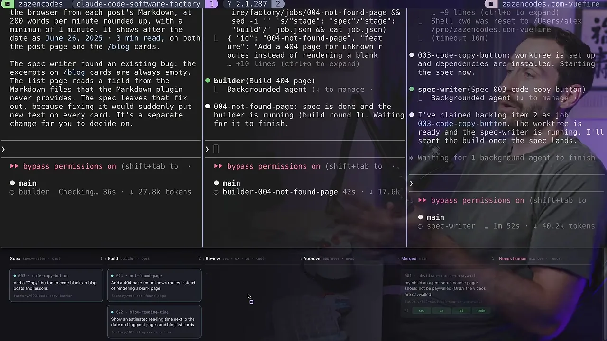
Sonnet 세션이 빨리 앞서 나가지만, 발표자는 오케스트레이터가 속도를 정하는 게 아니라고 봐요. 실제 일은 서브에이전트가 하고, 서브에이전트는 여전히 Opus예요. 그래서 오케스트레이터에는 가장 똑똑한 모델을 두고, 일부 서브에이전트만 빠르고 싼 모델로 내리는 게 낫다는 게 발표자의 직감이에요.
승인했는데 왜 병합이 안 됐을까요
리뷰 결과가 들어오고 승인 단계에 이르자 404 작업이 먼저 Needs human 칸에 섰어요. 대시보드 맨 오른쪽 분홍 카드에 'YOUR CALL' 표시가 붙어 있어요. Approve 칸의 002도 곧 같은 칸으로 넘어와요. 가운데 창은 '승인자는 문제를 못 찾았고 리뷰 넷 다 통과했다'면서도 needs-human으로 두었다고 해요. 그러고는 'backlog.md 변경을 커밋하거나 stash한 뒤 승인 명령을 치라'고 안내해요.
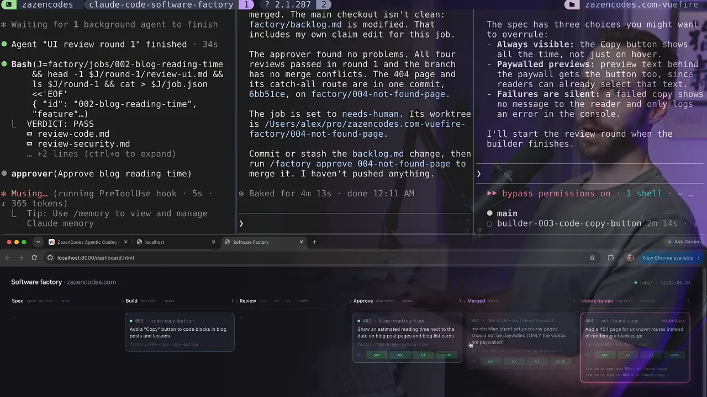
블로그 읽는 시간 작업이 사람에게 넘어온 건 타당했어요. 병합하면 블로그 렌더 캐시를 다시 만들어야 해서 시간이 걸리거든요. 404는 이상했어요. 가운데 창에 이유를 물으니 답이 왔어요. 승인자는 APPROVE를 썼고, 막힌 건 병합 단계였어요. 병합은 main 체크아웃이 깨끗할 때만 도는데, git status에 강조된 M factory/backlog.md가 떠 있었어요. /factory next가 항목을 집으면서 이 파일을 고쳤기 때문이에요.
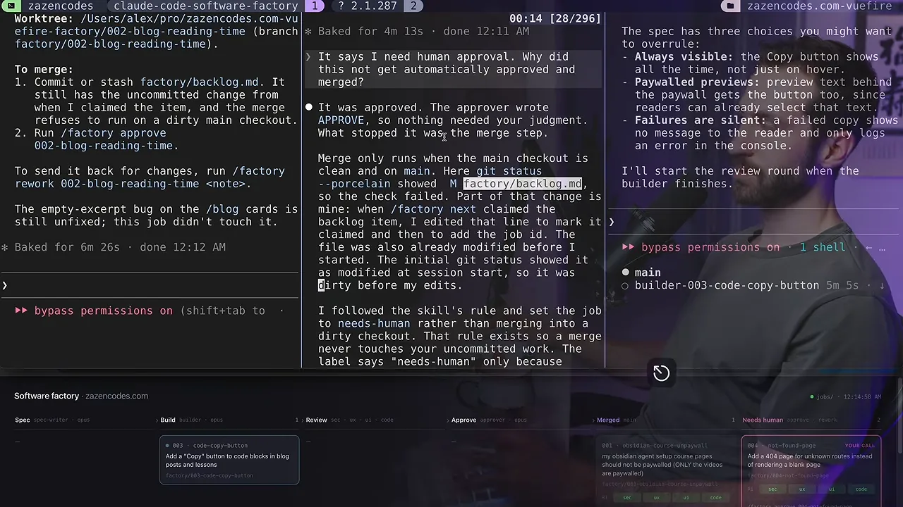
발표자의 판단은 간단해요. 팩토리를 쓰면 백로그 변경은 늘 생기니, 이게 병합을 막으면 안 돼요. 그래서 SKILL.md의 병합 단계를 고치게 해요. 빨간 줄이 원래 조건이고 초록 줄이 바뀐 조건이에요. 깨끗한지 검사할 때 ':!factory/backlog.md'로 이 파일 하나만 빼요. 작업 브랜치는 이 파일을 건드리지 않으니 안전하다는 설명이 아래에 붙어 있어요.
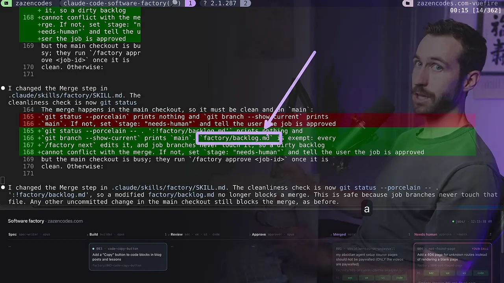
발표자는 '팩토리가 코드베이스에서 가장 중요한 부분이니 고칠 때는 제일 좋은 모델을 쓰고 싶다'고 덧붙여요. 이번엔 마침 Sonnet 창에서 고쳤어요. 그다음 남은 두 작업을 합쳐요. 마지막 복사 버튼 작업은 방금 고친 SKILL.md 변경 때문에 또 병합이 막혔어요. 그 변경을 따로 커밋하게 한 뒤에야 들어갔어요.
그 과정에서 발표자는 승인 판단이 너무 보수적이라고 느껴요. 웬만한 건 다 사람에게 보여 주려 하니, 가드레일을 좀 풀어서 팩토리를 더 효율적으로 다듬을 수 있다고 해요.
다음 단계와 비용
마인드맵 마지막 'Limitations & next steps' 상자에는 네 줄이 있어요. 화면의 화살표는 셋째 줄 Application metrics(e.g. Sentry)를 가리키고 있어요.
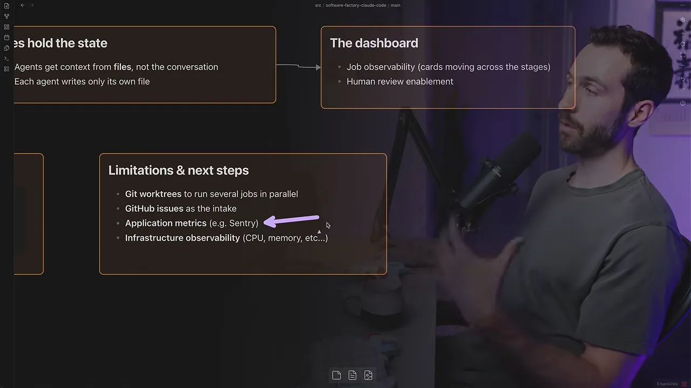
| 다음 단계 | 무엇이 좋아지나요 |
|---|---|
| Git worktrees | 여러 작업을 동시에 돌려요 (이번 영상에서 완료) |
| GitHub issues as the intake | 여러 사람이 낸 이슈가 그대로 팩토리 입력이 돼요. Slack 같은 다른 곳도 가능해요 |
| Application metrics (Sentry) | 운영 중 앱에서 난 버그를 맥락과 함께 바로 끌어와요 |
| Infrastructure observability | CPU(Central Processing Unit)·메모리 같은 지표로 배포 뒤를 지켜봐요 |
발표자가 특히 힘주는 건 지표 연결이에요. 기능이 운영에 나간 뒤에도 팩토리가 지켜보다가 서비스를 망가뜨리면 되돌리는 거예요. 배포로 끝나지 않고 그 뒤까지 루프 안에 두는 셈이에요. 1960년대 처음 나온 소프트웨어 팩토리 아이디어에도 측정과 관리가 들어 있었다는 점과 이어진다고 말해요.
비용이라는 과제
발표자가 꼽은 가장 큰 고민은 비용이에요. 관측도 잘 되고 결과 품질도 좋지만, 서브에이전트를 쓰면 에이전트끼리 맥락을 주고받느라 토큰이 더 들어요. 이 품질에 그만한 토큰을 쓸 가치가 있는지 따져 봐야 해요. 영상 속 작업은 모두 API(Application Programming Interface) 토큰이 아니라 Claude 구독 요금제 안에서 돌렸고, 발표자는 이게 큰 이점이라고 봐요.
그래도 발표자는 앞으로 이런 팩토리를 훨씬 많이 만들겠다고 해요. 영상은 아래 인용 화면으로 끝나요. 1992년 Victor Basili 등이 도시바 후추 소프트웨어 공장의 지속적 개선을 두고 쓴 말이에요.
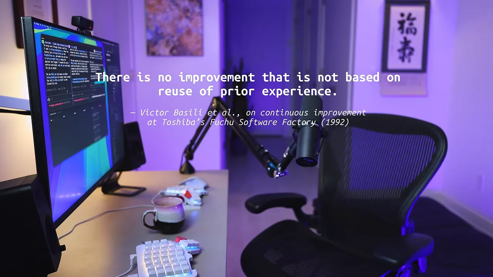